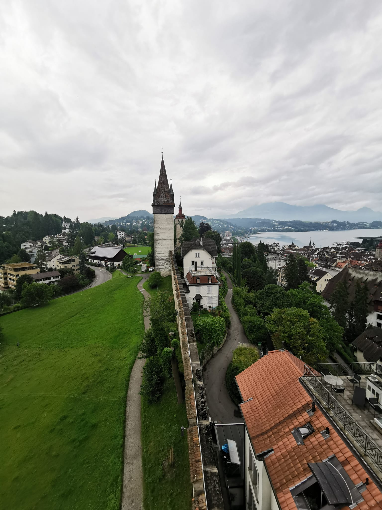
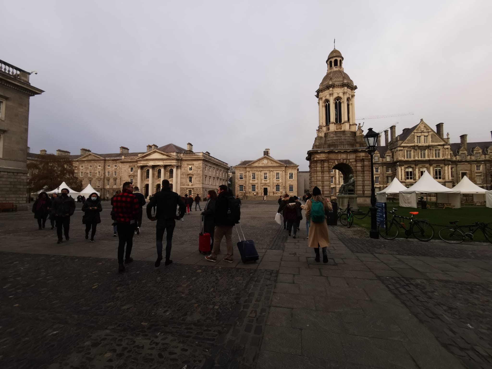

Sitios o Lugares
En el imaginario colectivo, viajar significa alejarse de la rutina diaria, del estrés del trabajo, de la escuela, de las obligaciones de cada día... Significa escapar y vivir una vida diferente a la de costumbre, por un par de días o semanas. Sin embargo, no creo que el término viajar, se reduzca solamente a esto; ¡es mucho más! Son emociones, descubrimientos, sabiduría.... ¿No créeis?
Lisboa
.jpeg)
Lisboa es una de las ciudades que más visitantes españoles atrae, y es que dada su cercanía y gracias a sus precios, debería ser una escapada obligatoria para todo español que quiera conocer nuestro país vecino.
Suiza
En el corazón de Europa se encuentra este país alpino con paisajes de ensueño. Sabedora de las maravillas que atesora dentro de sus fronteras, Suiza ha sabido proteger su entorno natural con un cuidado para quitarse el sombrero. Los Alpes ocupan la mayor parte de su territorio y ello se traduce en la inagotable oferta de actividades que encontramos. Los amantes del esquí podrán disfrutar aquí de la calidad de sus numerosas estaciones. También en los Alpes suizos se halla el glaciar Aletsch, el más grande de Europa, fenómeno que bien merece la pena ser contemplado. Subirse a un teleférico o un tren de montaña será también una buena opción para deleitarse con las preciosas vistas que se nos presentan.
Dublín
Fundada por los vikingos a principios del siglo IX, la capital irlandesa ha sido escenario de guerras y conflictos hasta llegar a definir su propia identidad en el siglo XX. Gracias a su pasado, Dublín es hoy una capital moderna y rica en historia capaz de cautivar a sus visitantes con la mezcla de las más arraigadas tradiciones gaélicas y una constante adaptación al mundo moderno.